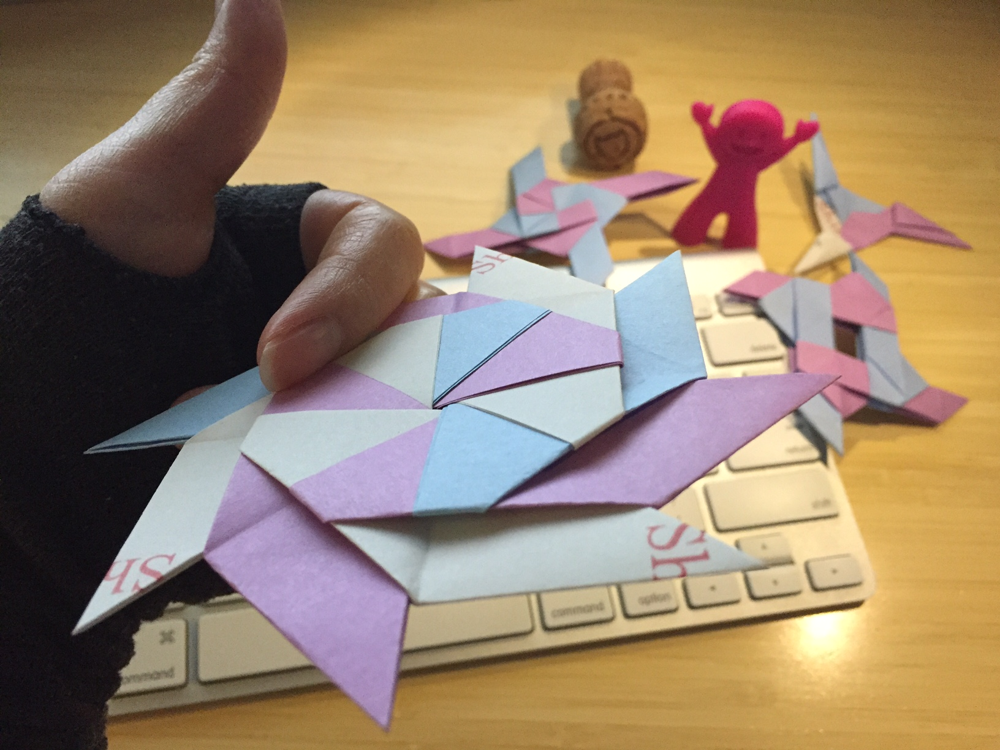

I am a ninja. Ssshhhhh!
My weapon of choice? The shuriken. It goes without saying, "throw it out there, and see what sticks." Well, in this case – slices. It also sounds like, "Sure, I can!" So, why not?
My shurikens come in many makeshift forms: some blunt, some scrappy, some bloody, some even falls apart – but it shall get better in time. This tiny, but magical piece of the world wide web is where I will showcase my shurikens – the concept, inspiration, and the story behind each one.
You might have guessed by now(or not), that my shurikens are my coding projects.
If you click on the project link, it will take you to the iTunes Preview website.